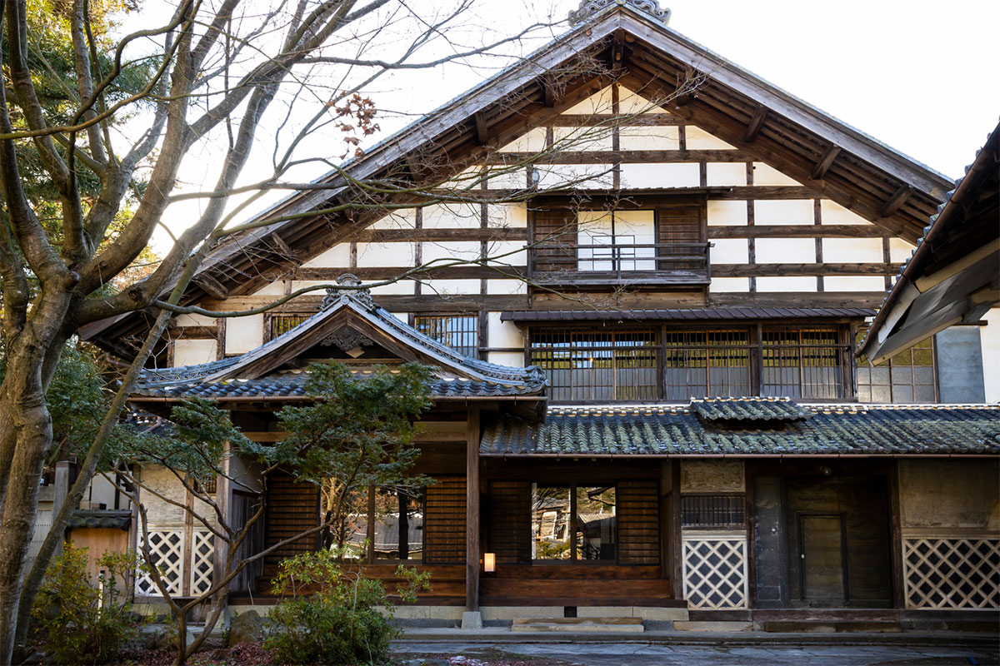
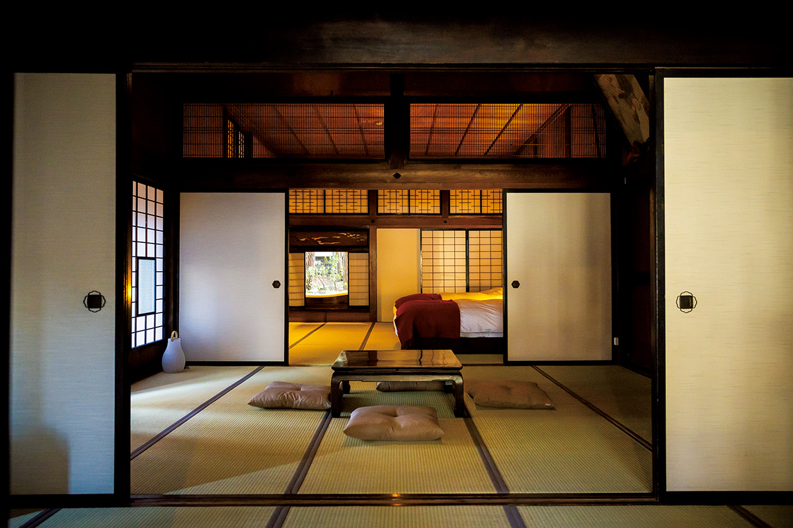
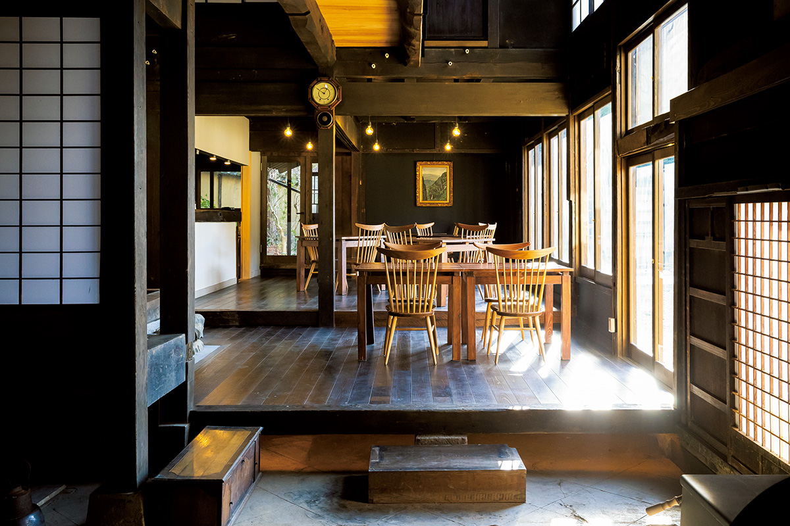
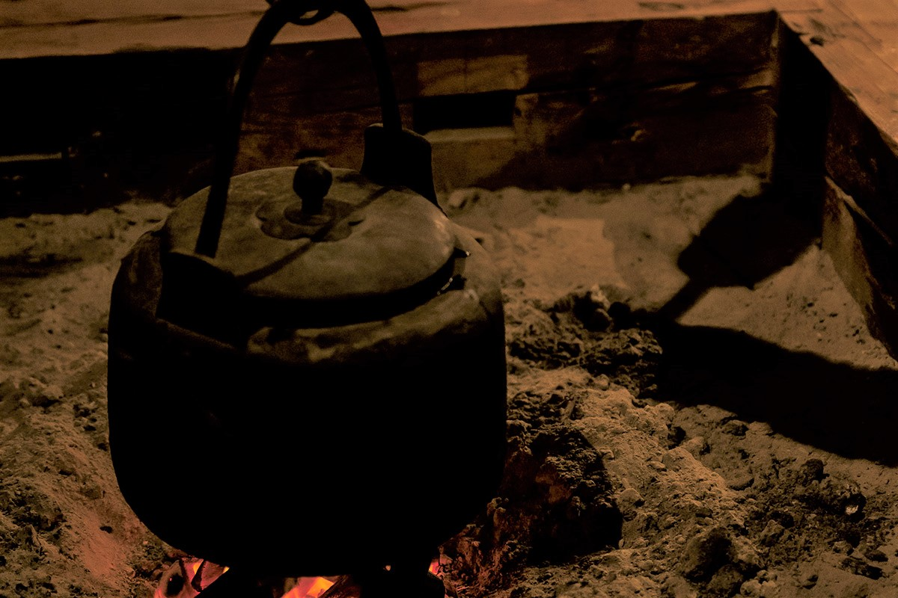
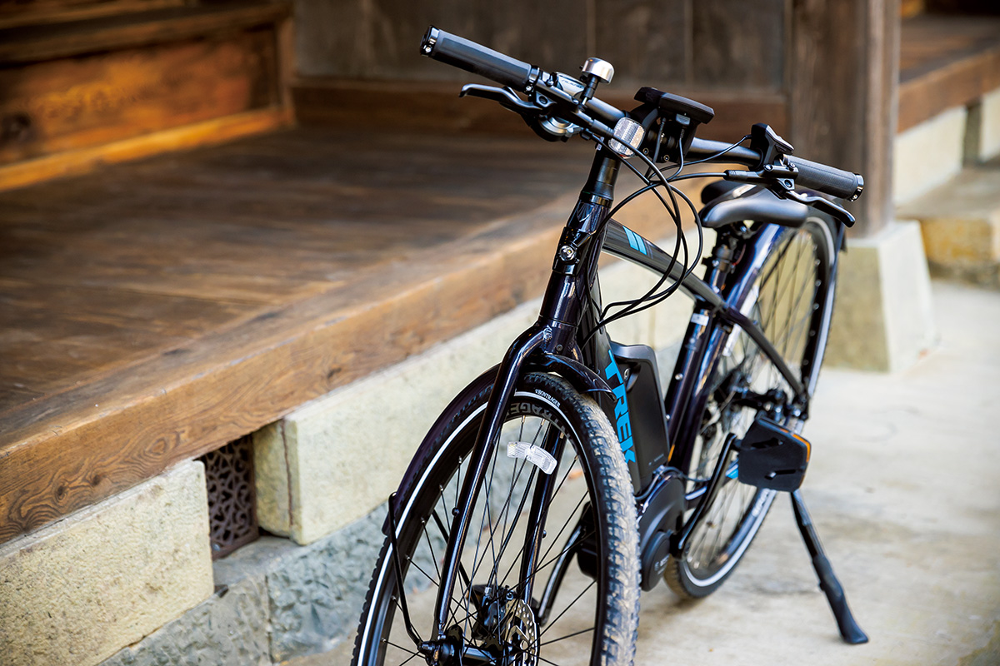
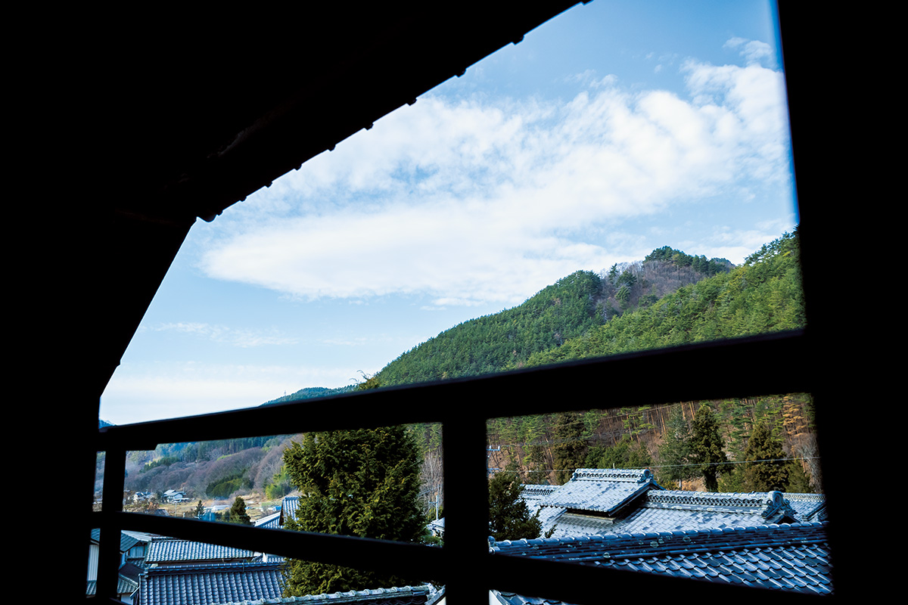

Префектура Нагано · Мацумото, Сига · где остановиться
Satoyama villa Honjin: ночь в доме, где отдыхали князья Мацумото

Как путешествовали японские князья в эпоху Эдо? В районе Сига на окраине Мацумото это можно примерить на себя: дом, где князья останавливались по дороге в Эдо, в 2020 году открылся как гостиница.
История
Дом для князя в дороге
В эпоху Эдо князьям приходилось часто бывать в дороге. Третий сёгун Иэмицу Токугава сделал это правилом: раз в два года глава каждого княжества отправлялся в Эдо представиться сёгуну, а потом возвращался домой. Путь растягивался на много дней, и для ночёвок князей и чиновников сёгуната в почтовых станциях держали особые дома. Их называли «хондзин».
Satoyama villa Honjin занимает такой дом. Он принадлежал семье Одзава и стоит в Хофукудзи, бывшей почтовой станции на старой дороге в Эдо. По этой дороге князья Мацумото уезжали с равнины Мацумото в сторону Уэды. Это район Сига в городе Мацумото. Гостиницу возродила группа энтузиастов.
Первое, что удивляет у порога, это три входа. Левый, под отдельной крышей, предназначался только князю. Средний был для его вассалов, а домочадцы пользовались самым маленьким, правым. Внутри ждёт второй сюрприз: над чайной комнатой в центре первого этажа нет потолка, и пространство уходит вверх примерно на 13 метров. Над головой сплетаются балки из японского вяза дзельквы, и по ним видно, сколько лет этому дому.
В эпоху Мэйдзи (1868–1912) дом сгорел, и здание не совпадает с первоначальным. Хозяин в эпоху Тайсё (1912–1926) не пожалел средств и восстановил его, так что настоящая архитектура хондзин дошла до наших дней. Потом дом около десяти лет пустовал, и казалось, что его уже не спасти.
Всё изменила женщина, которая в 2021 году была финансовым директором холдинга «Тобира». О доме она узнала от отца: он учился в одном классе с владельцем. Она взялась сохранить его как живое наследие округи, а потом познакомилась с главой холдинга, у которого в Мацумото уже были рёкан Myojinkan и ресторан Restaurant Hikariya в перестроенном амбаре. Из этой встречи и родилась гостиница.
«Пусть гости смотрят на тот же пейзаж, который местные видят каждый день, и проживут здесь несколько дней жизнью Сиги. Мы предлагаем не праздник вне будней, а другие будни, не похожие на ваши»
финансовый директор холдинга «Тобира»
Комнаты
Отдых по-княжески
В доме четыре номера. Самый почётный из них на первом этаже главного дома: «Люкс князя с видом на сад» занимает ту самую комнату, где отдыхал князь. Питание обсуждают с гостиницей заранее, а для трапез есть обеденный зал.


При ремонте старались сохранить как можно больше. Двери и рамы оставили прежние, а бумагу на перегородках сёдзи местные волонтёры наклеили заново. Под полом нашли старый очаг ирори, и вечером у его огня можно посидеть с бокалом.

Деревня
Лес, рис и соба
Природу и жизнь деревни вокруг дома предлагают узнать на деле. Гостиница устраивает прогулки с гидом по первозданному лесу, поездки на электровелосипедах, посадку риса и уроки приготовления лапши соба.

В соседних храмах, с которыми договорилась гостиница, можно переписать сутру кистью или побывать на огненном обряде гома.

Satoyama villa Honjin
- Адрес
- префектура Нагано, Мацумото, Хофукудзи-мати, 246
- Телефон
- +81 263-31-2301
- Номера
- 4
- Цены / Вход
- от 44 000 иен за номер за ночь, с налогом и сервисным сбором; питание обсуждается отдельно
- Заезд / выезд
- 15:00 / 11:00
- Как добраться
- на машине около 20 минут от съезда Адзумино скоростной дороги Нагано; от станции JR Мацумото около 30 минут на такси
Фото: Акио Накамура.